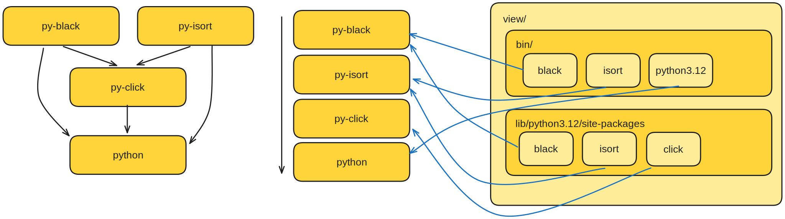
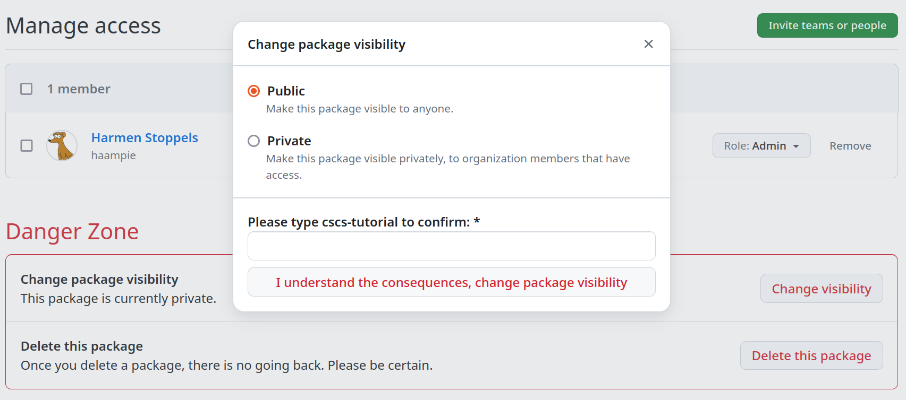
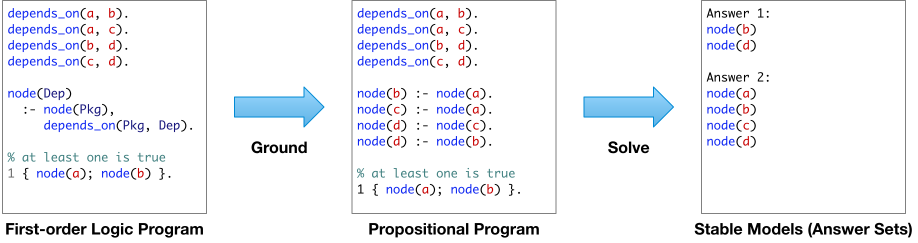
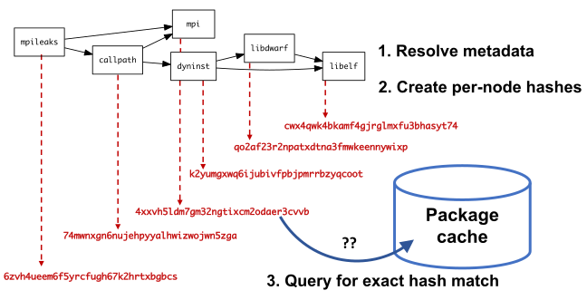
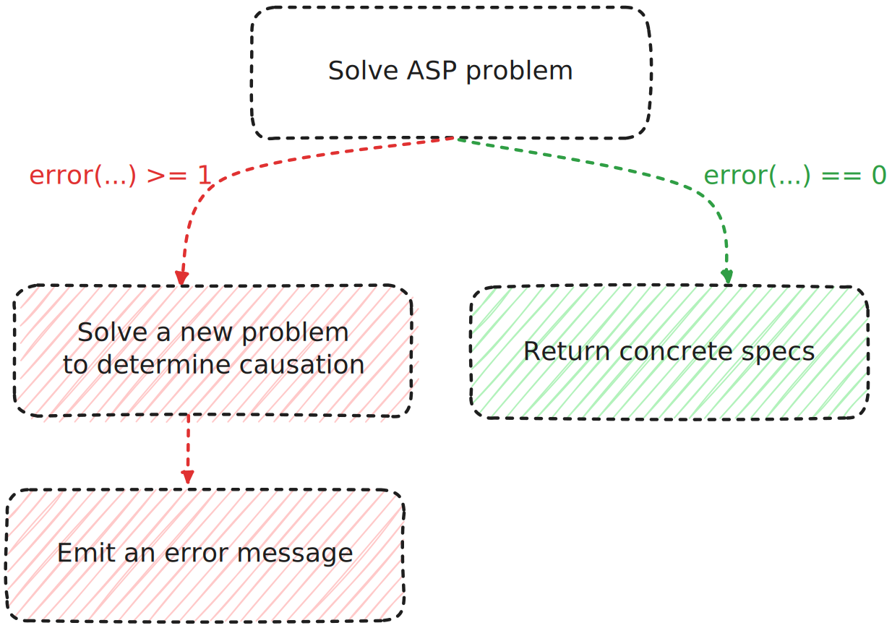

CSCS Spack Course 2024
13.06.2024
What's new in Spack?
and what's to come?
What's new
- Compiler runtime packages
- Automatic libc external
- Python virtual environments
Compiler runtime packages
$ spack spec zlib
Input spec
--------------------------------
- zlib
Concretized
--------------------------------
- zlib@1.3.1 %gcc@13.2.0 ...
- ^gcc-runtime@13.2.0 %gcc@13.2.0 ...
[e] ^glibc@2.38 %gcc@13.2.0 ...
- ^gmake@4.4.1 %gcc@13.2.0 ...
What is ^gcc-runtime?
- A Spack installed package that copies
libstdc++.so.6libgfortran.so.5libgcc_s.so.1- and others
What is ^libc
- An external-only package
- Virtual provided by
glibcandmusl - Largely replaces the static
ostagos=ubuntu24.04^glibc@2.39
But why?
- Software does not break if compiler is uninstalled
- Install from build cache without compilers
- Share binaries across Linux distros
- Create small OCI container images
- Be able to express
depends_on("glibc@2.31:")
Can't Spack build glibc?
- 👍 Spack would be isolated from the system
- Better build reproducibility
but...
- 👎 Spack would be isolated from the system
- Complicates use of system compilers
- Complicates use of externals
currently a non-goal
Why not ^glibc-runtime
- ... and copy
libc.so.6,libm.so.6 - Issue is mostly with hard-coded (search) paths to and in the dynamic loader
So here we are in Spack 0.22
$ spack spec zlib
Input spec
--------------------------------
- zlib
Concretized
--------------------------------
- zlib@1.3.1 %gcc@13.2.0 ...
- ^gcc-runtime@13.2.0 %gcc@13.2.0 ...
[e] ^glibc@2.38 %gcc@13.2.0 ...
- ^gmake@4.4.1 %gcc@13.2.0 ...
Spack 0.22
Compiler mixing support with gcc-runtime

Spack 0.22
Compiler is still a node attribute

Spack 0.23 🔮
Compiler becomes an ordinary node itself

Spack 0.23 🔮
Express dependencies of compilers
$ clang -v
Ubuntu clang version 16.0.6 (15)
Target: x86_64-pc-linux-gnu
Thread model: posix
InstalledDir: /usr/bin
Found candidate GCC installation: /usr/bin/../lib/gcc/x86_64-linux-gnu/10
Found candidate GCC installation: /usr/bin/../lib/gcc/x86_64-linux-gnu/11
Found candidate GCC installation: /usr/bin/../lib/gcc/x86_64-linux-gnu/12
Found candidate GCC installation: /usr/bin/../lib/gcc/x86_64-linux-gnu/13
Selected GCC installation: /usr/bin/../lib/gcc/x86_64-linux-gnu/13
$ $(clang -print-prog-name=as) --version | head -n1
GNU assembler (GNU Binutils for Ubuntu) 2.41

Spack 0.23 🔮
- Packages can inject a runtime dependency into dependents
- Runtimes will provide languages (partially in 0.22):
depends_on("fortran") - No compiler for data / pure Python packages
- Runtimes for other things than compilers?
What is python-venv?
Python's injected runtime
$ spack spec py-click
- py-click@8.1.7
- ^python@3.11.9
- ^ ...
- ^python-venv@1.0Why python-venv?
- The least worst solution™ for build isolation
- Spack environment views = Python venvs
- Support external Python better
Pip and Spack are different
pip install: all packages in a single venv dir$ ls my_venv/lib/python3.12/site-packages black click isortspack install: all packages in a unique dir$ tree spack/opt/spack ├── python-3.12.1-eu5igwm │ └── lib/python3.12 # standard library ├── py-black-24.3.0-c5yefsp │ └── lib/python3.12/site-packages/black ├── py-click-8.1.7-253ikya │ └── lib/python3.12/site-packages/click └── py-isort-5.12.0-yupkr4p └── lib/python3.12/site-packages/isort
Pip and Spack are different
- You
pip installpackages into a venv - You
spack installpackages into the store - A Spack environment can be "installed", but no files are put "in the environment"
- Spack environment views make them look similar
Environment views
$ spack env create --with-view ./view .
$ spack -e . add py-black py-isort
$ spack -e . install
$ ./view/bin/python3 -c 'import black' # works
Environment views
Single, flattened dir with tons of symlinks
environment views
with python-venv: bin/activate and pyvenv.cfg
What was the point again?
- You can
source bin/activate - Editor support (completion etc)
pip listandpip installinterop
Hands on idea
- Create an environment with view
spack env create --with-view ./view . - add and install
py-pipand othersspack -e . install --add py-pip py-black - try
source view/bin/activate - and
pip listorpip install
Hands-on #1
- Learn about build caches
- Create container images
- GitHub Actions and Packages
Follow along
- https://spack-tutorial.rtfd.io
- Click Binary Caches Tutorial
Setup GitHub API token
https://github.com/settings/tokens/newMake GitHub Package public
https://github.com/users/haampie/packages/container/cscs-tutorial/settings Try out the build cache
spack installshould use it- No GitHub token should be required if public
Reuse concretization
- The concretizer needs a build cache index
- It's a "remote" database
- Concretizer warns if not available
Reuse concretization
- Create index with
$ spack buildcache update-index <name> - Slow reduction operation
- Fetch all individual specs, upload single database
Runnable container images
- We can
spack installfrom the cache - We can't yet
docker runthem - Remember external
^glibc?
Add a base image of choice
$ spack -e . buildcache push \
--force \
--base-image ubuntu:24.04
# --base-image fedora:latest
- Works if base image glibc is ≥ ^glibc in Spack's DAG
- Gives you a basic shell
- And yet another system package manager
What's an OCI registry again?
- Bunch of blobs and manifests
- Blobs are tarballs named by sha256
- Manifests are tags & list blobs as layers
- One blob for every Spack package prefix
- One manifest for every Spack package
- ... with many layers: all runtime deps included
Tag an environment
- By default: single root per container image
- How can we compose container images?
- Typically non-trivial: try and merge official CUDA and MKL container images
- ... trivial in Spack due to single prefix per package
Tag an environment
Works best withunify:true
$ spack -e . add julia vim
$ spack -e . install
$ spack -e . buildcache push \
--tag julia-and-vim \
--base-image ubuntu:24.04 \
ghcr
In summary
spack installthe same binaries youdocker run- Share binaries with users (un)familiar with Spack
- Swap in your favorite distro as a base
- Compose images from multiple Spack packages
Try it yourself
- Create a GitHub repo
- Add a
spack.yamlenvironment with some spec - Add
.github/workflows/ci.yaml - Use the
spack/setup-spackaction - Add a concretize step
- Add an install step
- Add a step that pushes to your GitHub packages using
${{ secrets.GITHUB_TOKEN }} - Verify that a second run uses the cache
Why is the concretizer necessary?
# Specify a version range with `@`
hdf5@1.10.1
# Specify a compiler toolchain with `%`
hdf5@1.10.1 %gcc@4.7.3
# Activate or deactivate boolean variants
hdf5@1.10.1 +szip ~fortran
# Set multi-valued variants, or reserved keywords
hdf5@1.10.1 build_type=Release target=x86_64_v4
class Hdf5(CMakePackage):
"""HDF5 is a data model, library, ... """
homepage = "https://portal.hdfgroup.org"
url = "https://.../hdf5-1.14.3.tar.gz"
version("1.14.2", sha256="4b4b4453251")
version("1.12.3", sha256="49d88f4494a")
variant("shared", default=True, description="...")
variant("mpi", default=True, description="...")
depends_on("mpi", when="+mpi")
(define-public hello
(package
(name "hello")
(version "2.10")
(source
(origin
(method url-fetch)
(uri (string-append "hello-" version ".tar.gz"))
(sha256 (base32 "0ssi1..."))))
(build-system gnu-build-system)
(synopsis "Hello, GNU world: An example GNU package")
(description "GNU Hello prints ...")
(home-page "https://www.gnu.org/software/hello/")
(license gpl3+)))

Hands-on
# Try different variants, see how dependencies change
spack spec hfd5 ...
# Use spack graph to get more insight on DAG structure
# To visualize: https://dreampuf.github.io/GraphvizOnline/
spack graph -d --color ...
# Use a temporary environment to avoid reconcretizing
spack env activate --temp
spack add ...
spack concretize
...
Why is the concretizer so slow?
% Facts are specific "true" statements
node("lammps").
variant_set("laamps", "cuda", "false").
% Rules can derive additional facts
path(A, B) :- depends_on(A, B).
path(A, C) :- path(A, B), depends_on(B, C).
% Constraints say what cannot happen
:- path(A, B), path(B, A).
% Choice rules gives the solver freedom to choose
% from possible options
1 { version(Package, V)
: possible_version(Package, V) } 1
:- node(Package).
% Minimization defines the "optimal" solution
#minimize{
Weight,Package
: version_weight(Package, Weight),
node(Package)
}.

$ spack solve --timers hdf5
setup 6.676s
load 0.979s
ground 3.700s
solve 7.666s
total 19.897s
[ ... ]
lib/spack/spack/solver/asp.py
lib/spack/spack/solver/concretize.lp
Hands-on
# Try to time different concretizations
spack solve --timers ...
How does reuse work?
--fresh

concretizer:
# Whether to consider installed packages or packages
# from buildcaches when concretizing specs. If `true`,
# we'll try to use as many installs/binaries as possible,
# rather than building. If `false`, we'll always give you
# a fresh concretization. If `dependencies`, we'll only
# reuse dependencies but give you a fresh concretization
# for your root specs.
reuse: true
spack solve --show=asp hdf5
installed_hash("diffutils","cguhjk").
imposed_constraint("cguhjk","node","diffutils").
imposed_constraint("cguhjk","version","diffutils","3.10").
imposed_constraint("cguhjk","node_platform","diffutils","linux").
imposed_constraint("cguhjk","node_os","diffutils","ubuntu20.04").
imposed_constraint("cguhjk","node_target","diffutils","icelake").
imposed_constraint("cguhjk","variant_value","diffutils","build_system","autotools").
imposed_constraint("cguhjk","node_compiler","diffutils","gcc").
imposed_constraint("cguhjk","node_compiler_version","diffutils","gcc","9.4.0").
imposed_constraint("cguhjk","package_hash","diffutils","kbm...").
imposed_constraint("cguhjk","hash","diffutils","cguhjk").
imposed_constraint("cguhjk","compatible_libc","diffutils","glibc","2.31").
imposed_constraint("cguhjk","depends_on","diffutils","libiconv","link").
imposed_constraint("cguhjk","virtual_on_edge","diffutils","libiconv","iconv").
imposed_constraint("cguhjk","virtual_node","iconv").
imposed_constraint("cguhjk","hash","libiconv","iel...").
concretizer:
reuse:
roots: true
include:
- "%gcc"
concretizer:
reuse:
roots: true
from:
# OpenMPI should not be reused
# from store or buildcache...
- type: local
exclude: ["openmpi"]
- type: buildcache
exclude: ["openmpi"]
# ...and it must be the only external used
- type: external
include: ["openmpi"]
Hands-on
# Check that using --fresh doesn't emit hash facts
spack solve --fresh --show=asp ... | less
# Add a mirror, retry
spack mirror add developer-tools https://binaries.spack.io/develop/developer-tools-manylinux2014
spack buildcache keys --install --trust
spack solve --reuse --show=asp ... | less
# Now, use a finer selection from configuration
# https://spack.readthedocs.io/en/latest/build_settings.html#reuse-already-installed-packages
# Check how reused specs are added according to your filters
What is an optimal solution?
- Prefer newer versions
- Prefer default values for variants
- Prefer to use the same compiler across a DAG
- ...
% Choose most recent versions (priority 25)
#minimize{
Weight@25,node(Package)
: version_weight(node(Package), Weight)
}.
% Use default values for variants (priority 20)
#minimize{
1@20,Package,Variant,Value
: variant_default_not_used(Package, Variant, Value)
}.
spack solve hdf5
Priority Criterion Installed ToBuild
1 requirement weight - 0
2 number of packages to build (vs. reuse) - 5
3 number of nodes from the same package - 0
4 deprecated versions used 0 0
5 version badness (roots) 0 0
6 number of non-default variants (roots) 0 0
7 preferred providers for roots 0 0
8 default values of variants not being used (roots) 0 0
9 number of non-default variants (non-roots) 11 0
10 preferred providers (non-roots) 0 0
11 compiler mismatches that are not from CLI 23 0
12 compiler mismatches that are not from CLI 0 0
13 non-preferred OS's 33 0
14 version badness (non roots) 329 0
15 default values of variants not being used (non-roots) 2 0
16 non-preferred compilers 64 0
17 target mismatches 8 0
18 non-preferred targets 288 0
19 compiler mismatches (runtimes) 4 0
20 version badness (runtimes) 0 0
21 non-preferred targets (runtimes) 9 0
22 edge wiring 588 0
Hands-on
# Check how weights are changing depending on the spec
# and the overall configuration.
spack solve --reuse ...
spack solve --fresh ...
How are errors modeled?
clingo is not that helpful on unsat problems
node("a").
attribute(P) :- node(P).
:- attribute(P).
$ clingo example.lp
clingo version 5.6.2
Reading from example.lp
Solving...
UNSATISFIABLE
$ spack spec foo
==> Error: UNSATISFIABLE
node("a").
attribute(P) :- node(P).
error("{P} cannot have an attribute!", P) :- attribute(P).
$ clingo example.lp
clingo version 5.6.2
Reading from example.lp
Solving...
Answer: 1
node("a") attribute("a") error("{P} cannot have an attribute!","a")
SATISFIABLE
$ spack spec foo
==> Error: foo cannot have an attribute!

$ spack spec hdf5@1.14 ^cmake@3.16
==> Error: concretization failed for the following reasons:
1. Cannot select a single "version" for package "cmake"
2. Cannot satisfy 'cmake@:3.17'
3. Cannot satisfy 'cmake@:3.16'
4. Cannot satisfy 'cmake@3.18:'
5. Cannot satisfy 'cmake@3.16'
6. Cannot satisfy 'cmake@3.18:'
required because hdf5 depends on cmake@3.18: when @1.13:
required because hdf5@1.14 ^cmake@3.16 requested explicitly
7. Cannot satisfy 'cmake@3.16'
required because hdf5@1.14 ^cmake@3.16 requested explicitly
8. Cannot satisfy 'cmake@3.18:' and 'cmake@3.16
required because hdf5@1.14 ^cmake@3.16 requested explicitly
required because hdf5 depends on cmake@3.18: when @1.13:
required because hdf5@1.14 ^cmake@3.16 requested explicitly
9. Cannot satisfy 'cmake@3.16' and 'cmake@3.18:
required because hdf5@1.14 ^cmake@3.16 requested explicitly
required because hdf5 depends on cmake@3.18: when @1.13:
required because hdf5@1.14 ^cmake@3.16 requested explicitly
10. Cannot satisfy 'cmake@3.12:' and 'cmake@3.16
required because hdf5@1.14 ^cmake@3.16 requested explicitly
required because hdf5 depends on cmake@3.12:
required because hdf5@1.14 ^cmake@3.16 requested explicitly
What are requirements and strong preferences?
package.py or configuration
class Hdf5(CMakePackage):
requires("%gcc", msg="This package must be built with GCC")
packages:
hdf5:
require:
- spec: "%gcc"
message: "This package must be built with GCC"
packages:
all:
require:
- "+shared +cuda"
packages:
all:
require:
- "+shared"
- "+cuda"
packages:
all:
require:
- 'build_type=Debug'
- '%clang'
cmake:
require:
- '%gcc'
packages:
mpi:
require:
- 'mvapich2 %gcc'
mvapich2:
require:
- '~cuda'
packages:
all:
prefer:
- 'build_type=Release'
- '+cuda'
packages:
all:
require:
- any_of: ['build_type=Release', '@:']
- any_of: ['+cuda', '@:']
Hands-on
# Add a requirement to configuration,
# try to violate it, check the error message
# Do the same with a strong preference, observe
# spack solve weights
# Enforce virtuals in an environment using
# requirements